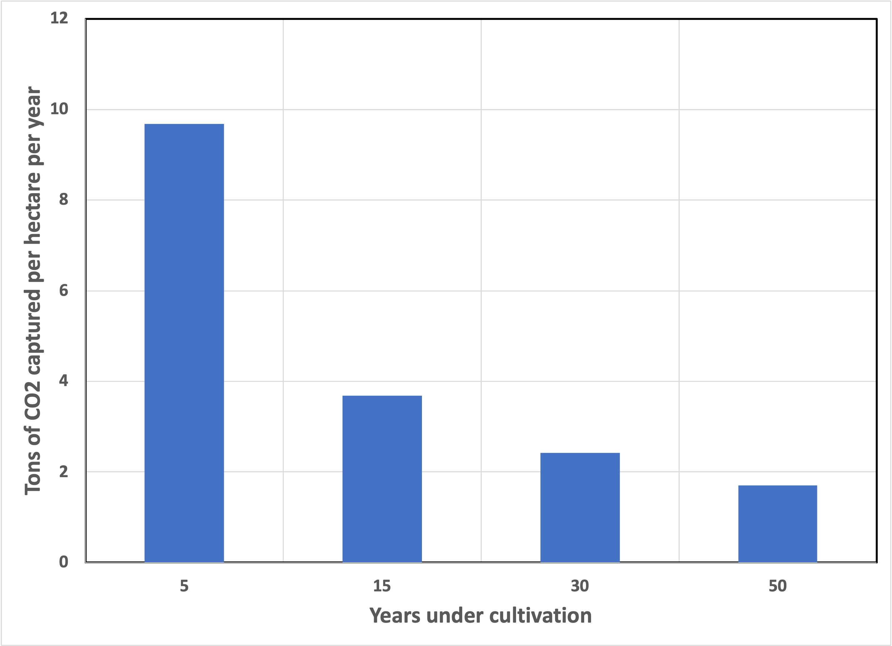

As we emerge from our COVID-induced isolation, we are all beginning to re-establish our social ties. This past week, I had the pleasure of reconnecting over dinner with Dr. Howard Branz . Howard and I became friends at ARPA-E, where we were both Program Directors and shared the responsibility of selecting awardees for the Agency’s first planned “open solicitation”, OPEN 2012. While both Howard and I have strong science backgrounds, he spent most of his career in pure research, working out the solid-state physics of solar cells at the National Renewable Energy Laboratory. Howard is now the Director of Science & Impact at Galvanize Climate Solutions .
We talked about many things, but I (of course) brought up the topic of desalination as the only practical way to get to net zero. “Scientists are counter-suggestible,” as my Ph. D. advisor used to tell me, so, among scientists, the word “only” is a challenge to be met. Howard rose to the challenge. After a spirited discussion, we agreed on two points: First, the core of the problem is economics, not technology—we already have the know-how to pull carbon dioxide from the atmosphere. Second, direct-air capture of carbon dioxide is not economically feasible at current energy costs without some form of a government-imposed tax on emissions.
Howard then raised an objection pertinent to biological methods for carbon capture that’s worthy of further discussion. If you think about it, as a general rule, carbon captured photosynthetically is also biodegradable. In other words, plants capture carbon for their use, but some of it is also appropriated by other biological systems for energy. This process releases carbon dioxide back into the air. If capture and release are equal, then the effects cancel out—there’s only a benefit to the atmosphere if more carbon is captured than is released.
Before humans began to burn geologic carbon for energy, the capture & release of carbon dioxide must have been balanced for thousands of years. If not, the atmosphere would change until the global ecosystem achieved a balance.
Apropos of the last installment that covered irrigation, we need to measure how much carbon is retained when previously unirrigated land becomes irrigated. That’s not precisely bleeding-edge research. It’s mundane work that depends on many variables like the nature of the soil, the specific crop being grown, etc. There are also different places where the carbon can end up—the principal value is the creation of soil with large amounts of “soil organic carbon” (or SOC). This isn’t the only place (other than being released) that carbon can end up: Some root-associated microbes create water-soluble acids that help extract minerals from rock and form soil. The carbon in these acids is easily washed away rather than retained.
Whatever we come up with, it’s not going to be a hard-and-fast number to be treated as Gospel. The best we hope for is to get an idea of whether the math supports the conclusion. Let’s look at some data:

I chose this obscure reference because it reported the primary data that I needed. As in the earlier installment 1 , the authors looked at the Nile Delta, a typically arid region that is only useful for agriculture when irrigated. They looked at three crop types (clover, sugar beet, and rice) and reported the SOC content (as a carbon sequestration rate). They reported measurements from soils of different ages, starting when cultivation began, versus a baseline of uncultivated land.
It’s evident that irrigation of arid lands captures more carbon than is released, but quantifying the amount can be challenging. What’s remarkable (and also apparent, if you think about it) is that when soil is first irrigated, it tends to retain more carbon than it does as it ages. As the ecosystem becomes more stable and more topsoil forms, the effectiveness of irrigation for carbon capture decreases. But, even after 50 years, the net effect remains.
But does this primary data support the desalination-for-irrigation thread? Earlier, I assumed (without proof) that half of the carbon retained by a sugarcane crop would be eligible for a carbon credit in Europe because the soil would retain it. This calculation worked out to 5 tons of carbon dioxide captured per acre, worth about $450 annually at current prices. Now we can see if that assumption is close to the truth: What is observed is, over the first five years of cultivation, about 10 tons of CO2 per hectare (4 tons per acre) is retained as soil organic carbon every year. Biochemically, the crops considered in the above chart are significantly less productive than sugarcane, so that could account for the difference, but it’s really unknowable.
Bottom line: I’m pleased with the guesswork!
Thank you for reading Healing the Earth with Technology. This post is public so feel free to share it.